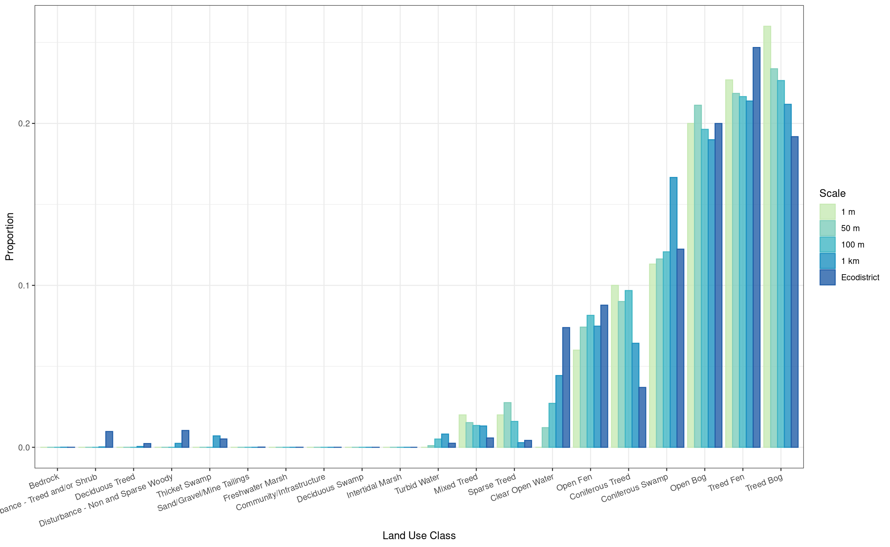

sites_possible <- sf::st_read(
"data/sites/GRTS_PossibleCaARU_sample_draw_base.shp",
quiet = TRUE) |>
dplyr::mutate(source = "GRTS_PossibleCaARU_sample_draw_base") |>
dplyr::mutate(fullID = paste(SampleID, ID, source, sep = "_"))
additional_sites <- readr::read_csv("data/sites/Selected_Peat_Sites.csv") |>
sf::st_as_sf(coords=c("lon_WGS84", "lat_WGS84"), crs = 4326) |>
sf::st_transform(sf::st_crs(sites_possible)) |>
dplyr::mutate(source = "Selected_Peat_Sites") |>
dplyr::mutate(fullID = paste(SampleID, ID, source, sep = "_"))
all_sites <- sites_possible |>
dplyr::bind_rows(additional_sites)
ecodistrict <- sf::st_read(
"data/ecodistrict_shp/Ecodistricts/ecodistricts.shp",
quiet = TRUE) |>
dplyr::filter(ECODISTRIC == 1028)
lu_16 <- raster::raster("data/land_use/FarNorth_LandCover_Class_UTM16.tif")
lu_17 <- raster::raster("data/land_use/FarNorth_LandCover_Class_UTM17.tif")
lu_dat <- readr::read_csv("data/land_use/attr_table_northen_ont_lc.txt") |>
dplyr::mutate(cats = as.factor(code))Land Cover Analysis
Loading data
We load the possible sites (quiet = TRUE is for not displaying verbose loading information). We also load the two halves of the far north land cover dataset, along with the the attribute table of land cover classes. We load the ecodistrict data and select for the relevant lowlands disctrict, coded as 1028.
Plotting spatial data
It is always a good idea to try and plot spatial data before any processing.
ggplot() +
geom_sf(data = ecodistrict) +
geom_sf(data = sf::st_transform(all_sites,
sf::st_crs(ecodistrict))) +
theme_bw()Plotting the land cover data is difficult because it is provided is two different UTMs.
Extracting Land Cover data
The following functions will take care of land cover extraction for sites.
extract_from_points <- function(scale_m, sites, lu) {
sites_buffer <- sites |>
sf::st_transform(sf::st_crs(lu)) |>
sf::st_buffer(dist = scale_m) |>
dplyr::select(fullID)
extr <- exactextractr::exact_extract(lu, sites_buffer,
progress = FALSE,
include_cols = "fullID")
extr <- mapply(extr, 1:length(extr),
FUN = \(x, y) dplyr::mutate(x, id = y),
SIMPLIFY = F)
extr_df <- do.call(rbind, extr) |>
dplyr::filter(!is.na(value)) |>
dplyr::relocate(id)
return(extr_df)
}
compute_land_cover <- function(scale_m, sites,
lu_16, lu_17, lu_dat,
summarise_all = TRUE) {
extr_16_df <- extract_from_points(scale_m, sites, lu_16)
extr_17_df <- extract_from_points(scale_m, sites, lu_17)
stopifnot(all(!(extr_16_df$siteID %in% extr_17_df$siteID)))
extr <- rbind(extr_16_df, extr_17_df) |>
dplyr::arrange(id, value)
if (summarise_all) {
extr_table <- extr |>
dplyr::group_by(value) |>
dplyr::summarise(coverage_fraction_sum = sum(coverage_fraction)) |>
dplyr::mutate(prop =
coverage_fraction_sum/sum(coverage_fraction_sum)) |>
dplyr::ungroup() |>
dplyr::mutate(value = as.factor(value)) |>
dplyr::left_join(lu_dat, by = c("value" = "cats")) |>
dplyr::select(category_code, prop, label)
} else {
extr_table <- extr |>
dplyr::group_by(fullID, value) |>
dplyr::summarise(coverage_fraction_sum = sum(coverage_fraction)) |>
dplyr::mutate(prop =
coverage_fraction_sum/sum(coverage_fraction_sum)) |>
dplyr::ungroup() |>
dplyr::mutate(value = as.factor(value)) |>
dplyr::left_join(lu_dat, by = c("value" = "cats")) |>
dplyr::select(fullID, category_code, prop, label)
}
extr_table[is.na(extr_table)] <- 0
return(extr_table)
}We extract at different scales (buffer radius around points): 1 m, 50 m, 100 m and 1 km.
res_points <- mapply(FUN = compute_land_cover,
c(`1 m` = 1, `50 m` = 50,
`100 m` = 100, `1 km` = 1000),
MoreArgs = list(
sites = sites_possible,
lu_16 = lu_16, lu_17 = lu_17, lu_dat = lu_dat),
SIMPLIFY = F) |>
dplyr::bind_rows(.id = 'scale') |>
dplyr::mutate(scale = forcats::fct_relevel(scale, "1 m", "50 m",
"100 m", "1 km"),
label = forcats::fct_reorder(label, prop)) |>
dplyr::arrange(scale, dplyr::desc(prop))
knitr::kable(res_points)| scale | category_code | prop | label |
|---|---|---|---|
| 1 m | TrBOG | 0.26 | Treed Bog |
| 1 m | TrFEN | 0.23 | Treed Fen |
| 1 m | OBOG | 0.20 | Open Bog |
| 1 m | ConSWA | 0.11 | Coniferous Swamp |
| 1 m | ConTRE | 0.10 | Coniferous Treed |
| 1 m | OFEN | 0.06 | Open Fen |
| 1 m | SpTRE | 0.02 | Sparse Treed |
| 1 m | MixTRE | 0.02 | Mixed Treed |
| 50 m | TrBOG | 0.23 | Treed Bog |
| 50 m | TrFEN | 0.22 | Treed Fen |
| 50 m | OBOG | 0.21 | Open Bog |
| 50 m | ConSWA | 0.12 | Coniferous Swamp |
| 50 m | ConTRE | 0.09 | Coniferous Treed |
| 50 m | OFEN | 0.07 | Open Fen |
| 50 m | SpTRE | 0.03 | Sparse Treed |
| 50 m | MixTRE | 0.02 | Mixed Treed |
| 50 m | WAT | 0.01 | Clear Open Water |
| 50 m | XWAT | 0.00 | Turbid Water |
| 100 m | TrBOG | 0.23 | Treed Bog |
| 100 m | TrFEN | 0.22 | Treed Fen |
| 100 m | OBOG | 0.20 | Open Bog |
| 100 m | ConSWA | 0.12 | Coniferous Swamp |
| 100 m | ConTRE | 0.10 | Coniferous Treed |
| 100 m | OFEN | 0.08 | Open Fen |
| 100 m | WAT | 0.03 | Clear Open Water |
| 100 m | SpTRE | 0.02 | Sparse Treed |
| 100 m | MixTRE | 0.01 | Mixed Treed |
| 100 m | XWAT | 0.01 | Turbid Water |
| 1 km | TrFEN | 0.21 | Treed Fen |
| 1 km | TrBOG | 0.21 | Treed Bog |
| 1 km | OBOG | 0.19 | Open Bog |
| 1 km | ConSWA | 0.17 | Coniferous Swamp |
| 1 km | OFEN | 0.07 | Open Fen |
| 1 km | ConTRE | 0.06 | Coniferous Treed |
| 1 km | WAT | 0.04 | Clear Open Water |
| 1 km | MixTRE | 0.01 | Mixed Treed |
| 1 km | XWAT | 0.01 | Turbid Water |
| 1 km | ThSWA | 0.01 | Thicket Swamp |
| 1 km | SpTRE | 0.00 | Sparse Treed |
| 1 km | NSWood | 0.00 | Disturbance - Non and Sparse Woody |
| 1 km | DecTRE | 0.00 | Deciduous Treed |
| 1 km | TrOrSHr | 0.00 | Disturbance - Treed and/or Shrub |
| 1 km | BED | 0.00 | Bedrock |
We also want to do the same operation for the ecodistrict to allow for comparison. We don’t need to use exact extraction, insteadt the crop and mask each raster. This operation is costly so we write out the rasters and load them again (see unrendered code).
ecodistrict_16 <- sf::st_transform(ecodistrict, sf::st_crs(lu_16))
ecodistrict_17 <- sf::st_transform(ecodistrict, sf::st_crs(lu_17))
lu_16_crop <- raster::crop(lu_16, ecodistrict_16)
lu_16_crop_mask <- raster::mask(lu_16_crop, ecodistrict_16)
lu_17_crop <- raster::crop(lu_17, ecodistrict_17)
lu_17_crop_mask <- raster::mask(lu_17_crop, ecodistrict_17)We can then get the frequencies of values. This operation is also costly so we write out the objects and load them again (see unrendered code).
lu_16_freq <- raster::freq(lu_16_crop_mask)
lu_17_freq <- raster::freq(lu_17_crop_mask)We combine the results of both UTMs.
res_ecodistrict <- rbind(lu_16_freq, lu_17_freq) |>
as.data.frame() |>
dplyr::group_by(value) |>
dplyr::summarise(count = sum(count)) |>
dplyr::ungroup() |>
dplyr::filter(!is.na(value)) |>
dplyr::mutate(prop = count/sum(count)) |>
dplyr::mutate(value = as.factor(value)) |>
dplyr::left_join(lu_dat, by = c("value" = "cats")) |>
dplyr::filter(!is.na(label)) |>
dplyr::select(category_code, prop, label) |>
dplyr::mutate(scale = "Ecodistrict") |>
dplyr::relocate(scale) |>
dplyr::arrange(scale, dplyr::desc(prop))
knitr::kable(res_ecodistrict)| scale | category_code | prop | label |
|---|---|---|---|
| Ecodistrict | TrFEN | 0.25 | Treed Fen |
| Ecodistrict | OBOG | 0.20 | Open Bog |
| Ecodistrict | TrBOG | 0.19 | Treed Bog |
| Ecodistrict | ConSWA | 0.12 | Coniferous Swamp |
| Ecodistrict | OFEN | 0.09 | Open Fen |
| Ecodistrict | WAT | 0.07 | Clear Open Water |
| Ecodistrict | ConTRE | 0.04 | Coniferous Treed |
| Ecodistrict | NSWood | 0.01 | Disturbance - Non and Sparse Woody |
| Ecodistrict | TrOrSHr | 0.01 | Disturbance - Treed and/or Shrub |
| Ecodistrict | MixTRE | 0.01 | Mixed Treed |
| Ecodistrict | ThSWA | 0.01 | Thicket Swamp |
| Ecodistrict | SpTRE | 0.00 | Sparse Treed |
| Ecodistrict | XWAT | 0.00 | Turbid Water |
| Ecodistrict | DecTRE | 0.00 | Deciduous Treed |
| Ecodistrict | MIN | 0.00 | Sand/Gravel/Mine Tailings |
| Ecodistrict | FrMAR | 0.00 | Freshwater Marsh |
| Ecodistrict | BED | 0.00 | Bedrock |
| Ecodistrict | URB | 0.00 | Community/Infrastructure |
| Ecodistrict | DecSWA | 0.00 | Deciduous Swamp |
| Ecodistrict | InMAR | 0.00 | Intertidal Marsh |
And then combine the results between scales and utm.
res <- rbind(res_points, res_ecodistrict) |>
tidyr::complete(scale, label) |>
tidyr::replace_na(list(prop = 0)) |>
dplyr::mutate(label = forcats::fct_reorder(label, prop))For individual site identity, at different scales:
res_points_by_site <-
mapply(FUN = compute_land_cover,
c(`1 m` = 1, `50 m` = 50,
`100 m` = 100, `1 km` = 1000),
MoreArgs = list(
sites = sites_possible,
lu_16 = lu_16, lu_17 = lu_17, lu_dat = lu_dat),
summarise_all = FALSE,
SIMPLIFY = F) |>
dplyr::bind_rows(.id = 'scale') |>
dplyr::mutate(scale = forcats::fct_relevel(scale, "1 m", "50 m",
"100 m", "1 km"),
label = forcats::fct_reorder(label, prop)) |>
dplyr::group_by(scale, fullID) |>
dplyr::arrange(dplyr::desc(prop)) |>
dplyr::rename(primary_category_code = category_code,
primary_prop = prop,
primary_label = label) |>
dplyr::mutate(secondary_category_code = primary_category_code[2],
secondary_prop = primary_prop[2],
secondary_label = primary_label[2],
prop_sum = primary_prop + secondary_prop) |>
dplyr::slice(1) |>
dplyr::ungroup() |>
dplyr::arrange(fullID)`summarise()` has grouped output by 'fullID'. You can override using the
`.groups` argument.
`summarise()` has grouped output by 'fullID'. You can override using the
`.groups` argument.
`summarise()` has grouped output by 'fullID'. You can override using the
`.groups` argument.
`summarise()` has grouped output by 'fullID'. You can override using the
`.groups` argument.DT::datatable(res_points_by_site)Results
We can plot the results with “dodged†ggplot2 barplots.
my_pal <- c('#c7e9b4','#7fcdbb','#41b6c4','#1d91c0','#225ea8','#0c2c84')
ggplot(res) +
geom_bar(aes(x = label, y = prop, fill = scale, colour = scale),
alpha = 0.8,
stat = "identity",
position = "dodge") +
theme_bw() +
theme(axis.text.x = element_text(angle = 20, vjust = 1, hjust = 1)) +
labs(x = "Land Use Class", y = "Proportion",
fill = "Scale", colour = "Scale") +
scale_fill_manual(values = my_pal) +
scale_color_manual(values = my_pal)
Removing the land use classes than are not present around sites, we get a slightly easier graph to read.
only_at_sites <- res |>
dplyr::filter(prop > 0) |>
dplyr::filter(scale != "Ecodistrict") |>
dplyr::pull(label)
res_filt <- res |>
dplyr::filter(label %in% only_at_sites)
ggplot(res_filt) +
geom_bar(aes(x = label, y = prop, fill = scale, colour = scale),
alpha = 0.8,
stat = "identity",
position = "dodge") +
theme_bw() +
theme(axis.text.x = element_text(angle = 20, vjust = 1, hjust = 1)) +
labs(x = "Land Use Class", y = "Proportion",
fill = "Scale", colour = "Scale") +
scale_fill_manual(values = my_pal) +
scale_color_manual(values = my_pal)